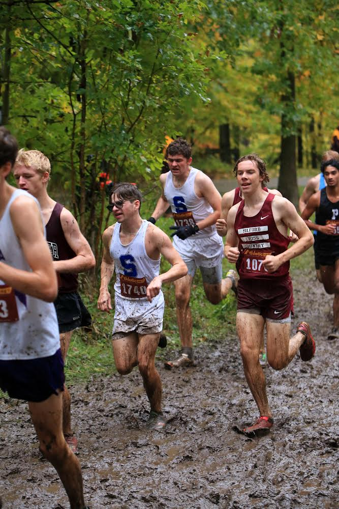
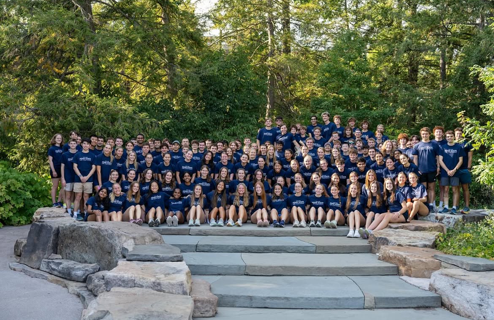

Cadentra is the AI-powered running coach that builds adaptive training plans, coaches you through every workout, and evolves with every mile you log.
Answer a few questions about your goals, fitness level, and schedule. Cadentra builds a fully personalized training plan in seconds.
Ask anything, anytime. Your AI coach answers training questions, adjusts your plan on the fly, and keeps you accountable every week.
Log runs, visualize trends, and watch your fitness compound. Cadentra surfaces the data that actually moves the needle.
Set your race date and Cadentra structures your entire training block around peak performance on race day — and backs up from there.
Whether you're lacing up for the first time or chasing a 100-mile buckle, Cadentra builds a training block tailored to your race, your mileage, and your favourite workouts — in seconds.
First 5K or couch-to-running? Cadentra starts where you are and builds you up safely — no guesswork, no overwhelm.
Build your first plan →Training for an 800m, mile, or 5K? Get a speed-focused block with intervals, tempos, and race-specific workouts baked in.
Build your speed plan →Half marathon or marathon on the calendar? Cadentra structures your entire build — from base to taper — around your race date.
Build your race plan →50K to 100 miles — Cadentra knows the difference between an ultra build and a road plan, and coaches you accordingly.
Build your ultra plan →Returning from injury or a long break? Cadentra eases you back in with a conservative build that respects where your body is now.
Build your comeback plan →Done the distance, want to go faster? Cadentra builds around your current fitness to find the time on the clock you haven't found yet.
Build your PR plan →No account needed. Takes 60 seconds.
Link your Strava account and Cadentra automatically pulls in your real run data — pace, distance, heart rate, elevation — so your training plan adapts based on how you're actually performing, not just what you planned.
Strava integration available at launch. Join the waitlist to be first.
Join the waitlist. Get early access, founding-member pricing, and direct input on what gets built next.
We'll be in touch. Train hard until then.
Cadentra started with one frustrated runner, a blank spreadsheet, and too many overtraining injuries. After years of following generic plans that didn't fit real life, the question became: what if your coach actually knew you?
Portrait — Tommy Gardella

Tommy racing — action shot

Club XC cross country team
"Every runner deserves a coach that actually shows up for them — not just on race day, but every Tuesday morning when motivation is gone."